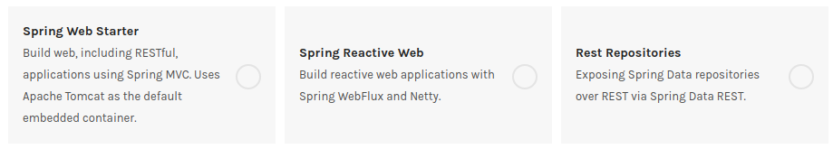

Friday, Aug 16, 2019
MongoDB 작업을 했지만 이것이 RESTful API 로 서빙되게 만드는것은 별개 문제다.
Authentication, Authorization 등은 일단 나중에 생각하기로 하고 routing 을 우선 어떤식으로 하는지부터 알아보자.

build.gradle 파일 의 dependencies 안에 아래 설정값을 넣어주면 된다.
implementation 'org.springframework.boot:spring-boot-starter-webflux'
시행착오를 좀 거쳐서 아래와 같은 컨트롤러를 만들었다. Express 로 치면 router 를 만든것인데 @RequestMapping 을 이용하면 공통된 path 를 밖에다 끄집어서 적어놓을 수 있다. 파라미터를 받는것도 {id} 와 같은식으로 path에 적어놓으면 @PathVariable 을 이용해서 함수에 인자로 넘겨받을 수 있게 되어있다.
package io.upsidedown.punchcardapi.controller;
import io.upsidedown.punchcardapi.model.UserModel;
import io.upsidedown.punchcardapi.repository.UserRepository;
...
import reactor.core.publisher.Mono;
@RequestMapping("/users")
@RestController
public class UserController {
@Autowired
private UserRepository userRepository;
@GetMapping()
public Flux<UserModel> getAllUsers() {
return userRepository.findAll();
}
@GetMapping("{id}")
public Mono<ResponseEntity<UserModel>> getTweetById(@PathVariable(value = "id") String userId) {
return userRepository.findById(userId)
.map(savedUser -> ResponseEntity.ok(savedUser))
.defaultIfEmpty(ResponseEntity.notFound().build());
}
}
우선은 GET 메서드만 만들어서 코드에 접근이 되는지 정도만 확인을 해 보았다.
이제 대충의 뼈대는 잡은것 같고 이후부터는 비지니스로직을 짜면서 살을 입혀보면 될것 같다.